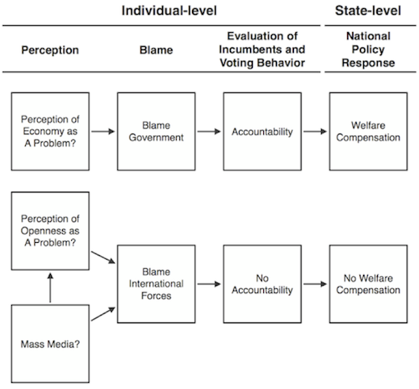
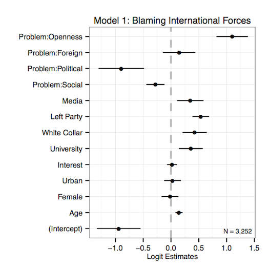
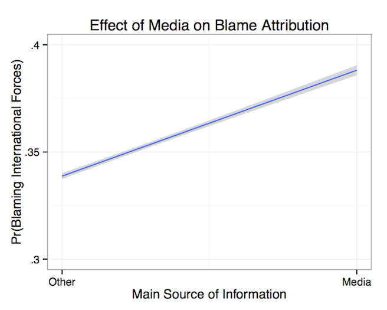
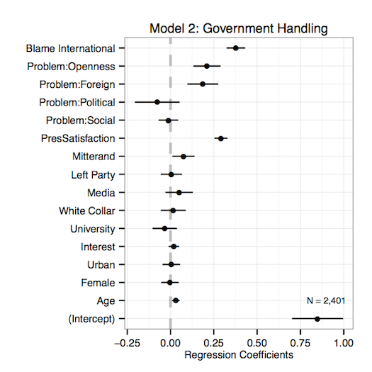
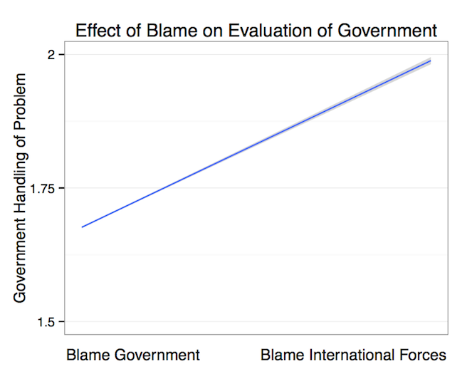
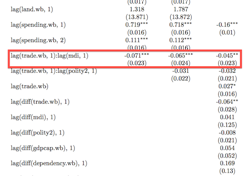

- The Research Question
- A Theory
- Research Strategy
- Evidence
- Conclusion
Mass Media and the Domestic Politics of Economic Globalisation
Justin Murphy
University of Southampton
March 5, 2014
Overview
The Research Question
- Previous research has shown that welfare states expand to compensate the domestic "losers" from economic globalisation.
- Ruggie 1982; Katzenstein 1985; Rodrik 1998; Adserà and Boix 2002.
- This argument assumes a threat of mobilisation by the domestic losers.
- But what if the mass media shape perceptions of economic globalisation?
- If so, could this affect the propensities of aggrieved groups to mobilise?
- If so, could the spread of mass media explain patterns of policy response to globalisation across countries and over time?
A Theory
- Mass media tend to divert blame for the domestic costs of economic liberalisation, away from governments and onto global market pressures.
- Through issue-framing (Iyengar 1987, 1991).
- Through indexing reportage to the claims of politicians (Bennett 1990; Zaller and Chiu 1996), who avoid blame whenever possible (Weaver 1986; McGraw 1990).
- As a result, I argue that exposure to mass media will make individuals less likely to punish a government for income losses due to economic liberalisation.
- Consequently, I expect that levels of mass media penetration within states will decrease the responsiveness of government spending to international trade exposure.

Research Strategy
- I test the individual-level implications by exploiting a little-known survey of French citizens taken in 1992-1993 (Chrique 1993).
- I test the state-level implications using cross-sectional, time-series data for more than a hundred countries between 1960 and 2010.
- Economic data come from the World Bank's World Development Indicators.
- Media data come from Banks' Cross-National Time-Series Data Archive and the World Bank.
- I consider a simple additive index of radio, television, and newspapers per capita (Warren 2013).
Do the media affect blame attributions?


Does blame affect evaluations?


Does blame affect voting behavior?


Do the media condition the correlation between trade openness and domestic spending?

Conclusion
Survey data furnish evidence that mass media diffuse blame for the domestic costs of economic liberalisation, away from governments and toward unaccountable international forces.
This shift of blame is associated with shifts in evaluations and behavior, which weaken the incentives for policymakers to compensate domestic losers from globalisation.
State-level data furnish evidence that policymakers indeed spend less in response to trade openness as levels of mass media increase.
Thank you!
The full paper and all the source code behind these analyses and slides are available via:
Stay in touch!